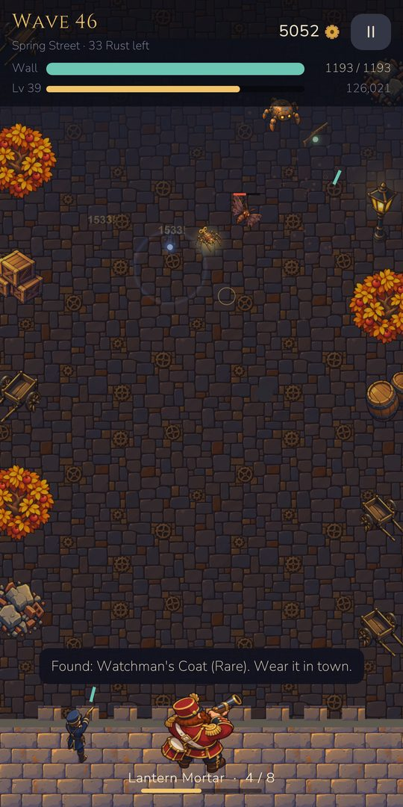

A Run, Start to Finish
A single run of The Belfry Gun, from picking a gun to the wall falling.
On this page
Note The game is in closed testing, so what you read here describes the game as testers see it today.
Every run in The Belfry Gun ends with the wall falling. What counts is how far you got and what you did with the loot and brass on the way.
1. Choose a plain gun
You begin with a choice of four starting guns: a pistol, a rifle, a scattergun or a big gun. They are deliberately plain. You pick your character as well, and each one has a favourite gun and a quirk (see Unlocks and characters).
2. Hold the wall
Waves arrive one after another. Each is bigger and tougher than the last: the Rust gets about 11% tougher every wave, and it hits the wall about 8.5% harder. A wave starts at 10 Rust and grows until it is 36 strong (not counting swarm clumps or boss escorts). Breaks between waves are short, at 1.5 seconds.
There is a "bring the next wave now" button, which pays bonus brass for not waiting.
3. Level up as you shoot
Kills give XP. Each level, the game offers three skills and you pick one, for this run only. Weapon skills only appear for the kind of gun you are carrying. Details live in Skills and the workshop.
4. Every fifth wave, make camp
After wave 5, 10, 15 and so on, the gunner makes camp in Belcourt and nothing moves until you leave. You wear the loot you found, break down what you do not want for brass, spend that brass at the workshop, and visit the town. See Belcourt, between waves.
5. Every tenth wave, a boss
The fight changes place every ten waves, and the tenth wave of each place brings a boss. Bosses have habits: some split, some charge, some summon, some wear heavy plate. More in The Rust.
6. The moth
Once per run, when the wall is nearly gone (15% or less), the lantern moth settles on the stones and mends 30% of it. Some characters and some lucky charms bring the moth back for a second visit.

7. The wall falls
When it does, you get one revive per run, which brings the wall back at half strength. After that, your records are counted, your medals are paid out, and a new run begins. The run is saved at every camp, so closing the app never costs you more than a few waves.
Tip Medals from every run go into the Belfry's Memory, so even a short run makes the next one a little stronger. See The Belfry's Memory.